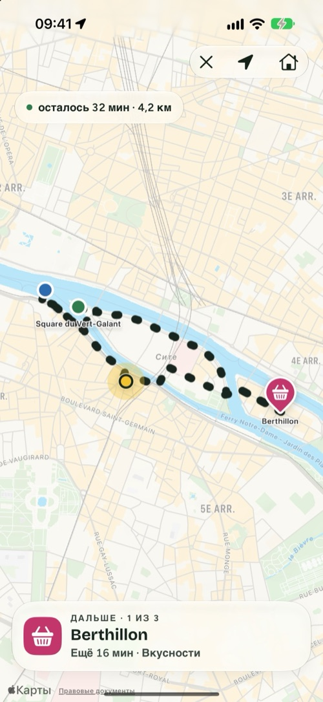
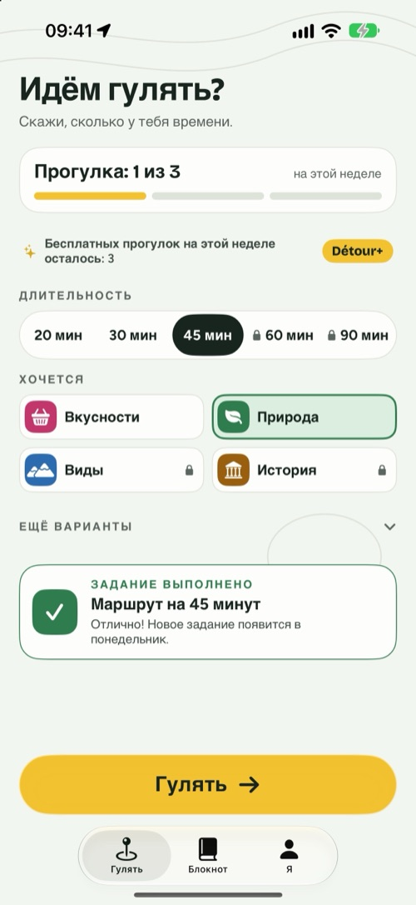
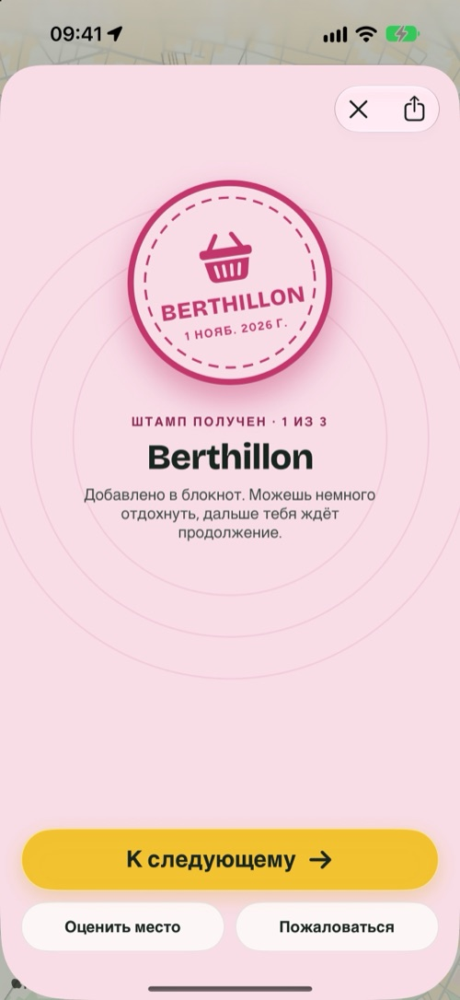
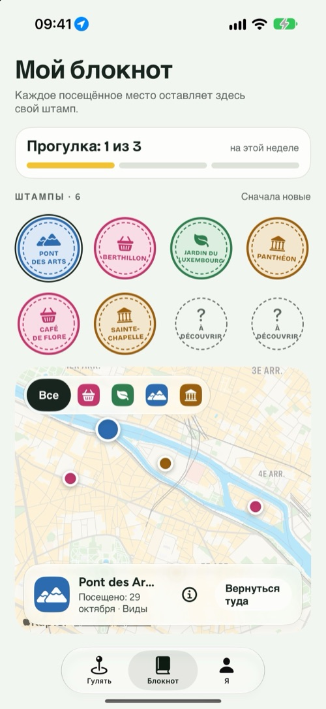

Détour
Скажи, сколько у тебя времени, и я дам тебе хороший повод выйти пройтись.
Для iPhone, iPad и iPhone Duo · Бесплатно, Détour+ по желанию

Три выбора, и ты уже на улице.
Détour не объясняет, как добраться из А в Б. Он даёт повод отправиться в путь и возвращает тебя домой.
Твоё время
20, 30, 45 минут или больше. Маршрут начинается там, где ты стоишь, и туда же возвращает.
Твоё настроение
Вкусности, природа, виды или история: 2–4 настоящих места по пути.
Выйти
Иди по маршруту. Каждое место засчитывается само и оставляет штамп в твоём блокноте.
Поводы пройтись, а не экскурсии.
Прогулка в четырёх экранах.



Сложен в руке, раскрыт на карте.
- В сложенном виде всё главное на внешнем экране: время, настроение и кнопка «Гулять».
- В раскрытом настройки на одной стороне, на другой прямо на глазах рисуется маршрут.
- Режим сюрприза: следующие места раскрываются по пути.
- Во время прогулки следующее место и расстояние остаются на экране блокировки и в Dynamic Island.
- Цель на неделю, значки, новое задание каждую неделю и сохранение каждой прогулки в «Здоровье», если захочешь.

Бесплатно, чтобы войти во вкус. Détour+, чтобы пойти дальше.
Прогулки без ограничений, все четыре настроения, маршруты до 90 минут с выбором покрытия и режим сюрприза.
Годовая
В годначинается с 7 бесплатных дней
Месячная
В месяцотмена в любой момент
Навсегда
Один разодна покупка, навсегда
Бесплатно: 3 прогулки в неделю, настроения «Природа» и «Вкусности», до 45 минут, блокнот и значки. Актуальные цены показаны в App Store и зависят от страны. Подписками можно управлять и отменять их в настройках учётной записи Apple.
Прогулка — только твоё дело.
Ничего создавать и запоминать не нужно. Твой блокнот остаётся на iPhone.
Она нужна, чтобы проложить маршрут и засчитать места, и только во время прогулки.
Никаких рекламных трекеров. Подробности в политике конфиденциальности.